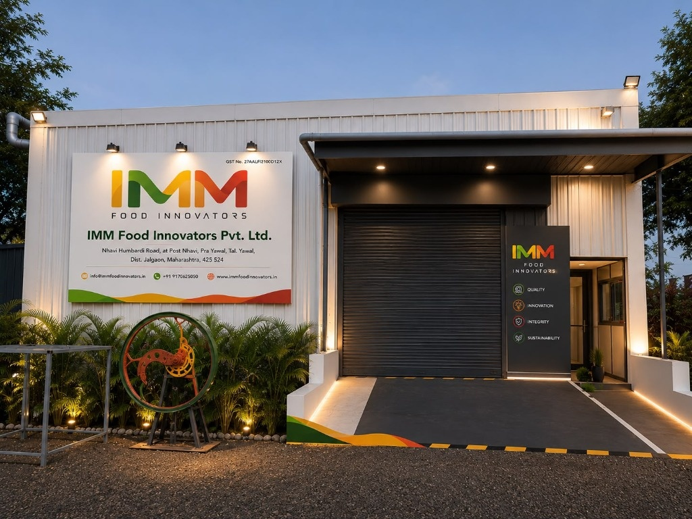

WHO WE ARE
About IMM Food Innovators LLP
Leading the way in innovative food processing with cutting-edge dehydration technology and global safety standards.

Leading Dehydrated Food Powders & Spices Supplier
At IMM Food Innovators LLP, we combine modern dehydration technology with traditional values to manufacture premium, nutrient-rich food powders. Our state-of-the-art facility in Yawal, Jalgaon, Maharashtra is equipped with advanced low-temperature processing machinery ensuring maximum retention of color, flavor, and nutritional value.
As a trusted B2B manufacturer, supplier, and exporter, we serve domestic and global markets with a strong commitment to quality, offering customized packaging and competitive wholesale pricing for bulk orders of banana powder, spices, and herbal formulations.
Advanced Manufacturing Facility
State-of-the-art low-temperature processing
Quality Certified
ISO 9001:2015 & FSSAI approved
Sustainable
Eco-friendly processing methods
Global Reach
Serving domestic & international markets